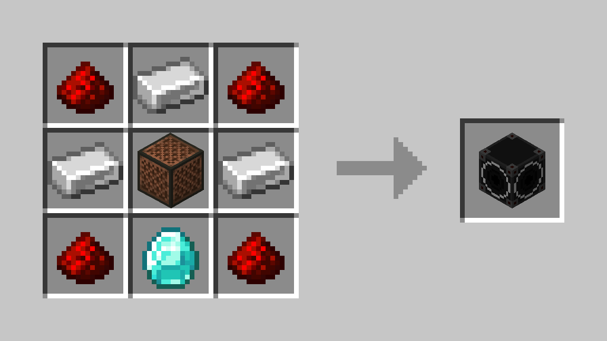

Overview
The Weather Siren is a block used to alert players.
Crafting

Usage
this block is powered by redstone and once activated the siren will go off for 22 seconds even if not powered.
Notes
Any extra details or behavior.
The Weather Siren is a block used to alert players.

this block is powered by redstone and once activated the siren will go off for 22 seconds even if not powered.
Any extra details or behavior.